American cuisine is a vibrant tapestry woven from the threads of diverse cultures and regional landscapes.
It's not a singular entity, but rather a dynamic and ever-evolving reflection of the nation's history, immigration patterns, and geographic bounty.
From the soul food of the South to the seafood of New England, and from the Tex-Mex flavors of the Southwest to the farm-to-table movement in California, American food celebrates both tradition and innovation.
It's a culinary journey that encompasses the comforting simplicity of a classic burger, the complex spices of Creole cooking, and the refined elegance of modern fusion dishes. American cuisine, at its heart, is a testament to the melting pot that is America, where global influences blend to create something uniquely and deliciously its own.
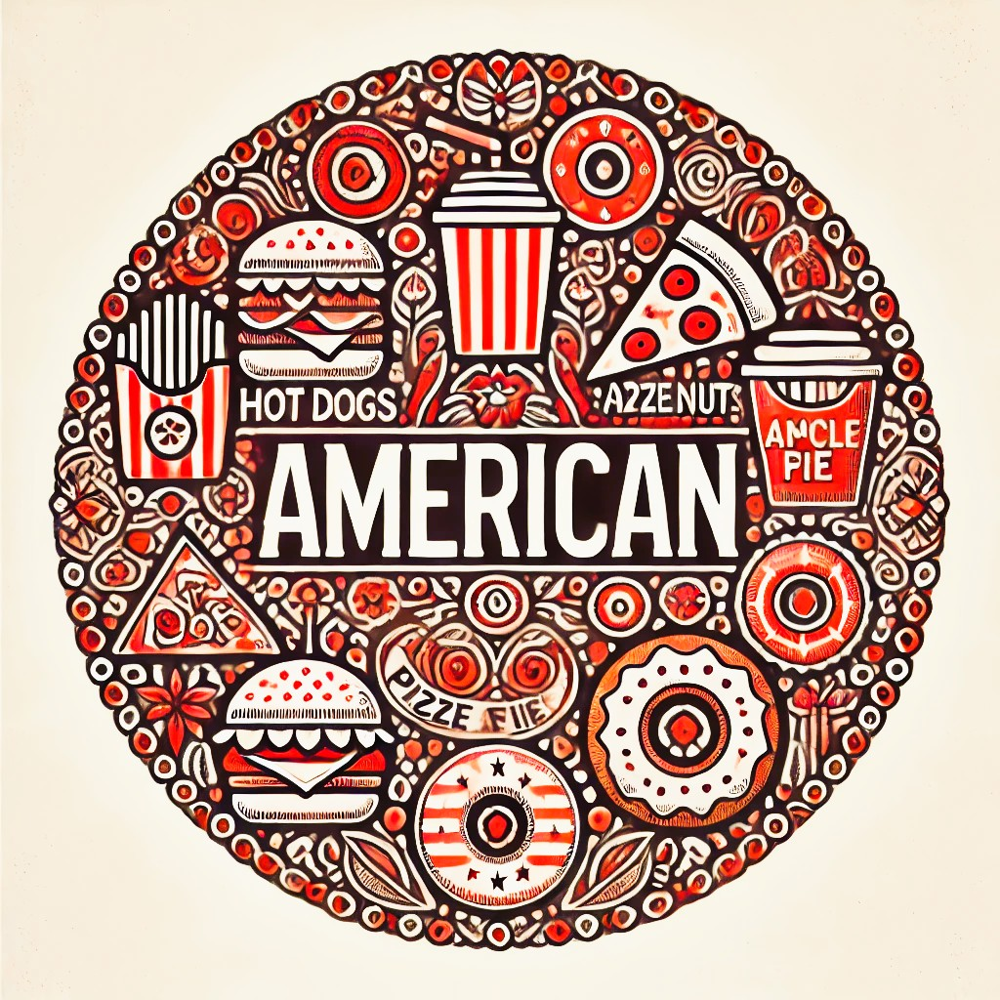
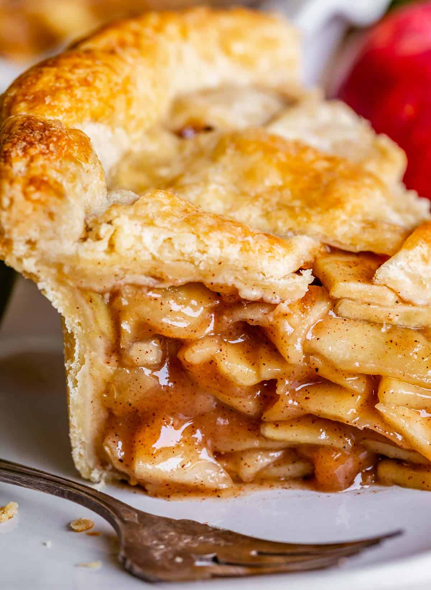
Apple pie is a cherished dessert that brings to mind feelings of coziness and satisfaction. Its foundation lies in a flaky pastry crust, typically crafted from flour, butter or shortening, salt, and cold water, aiming for a tender, delicate texture that enhances the sweet filling. The heart of the pie is the apple filling, a medley of sliced apples, sugar, and warming spices such as cinnamon, nutmeg, and sometimes cloves. Selecting the right apples, like Granny Smith, Honeycrisp, or Golden Delicious, often in a blend, is crucial for a balance of tartness and sweetness. To prevent a watery pie, a thickener such as flour or cornstarch is used to absorb the juices released during baking. Crafting a successful apple pie involves careful attention to several key elements.
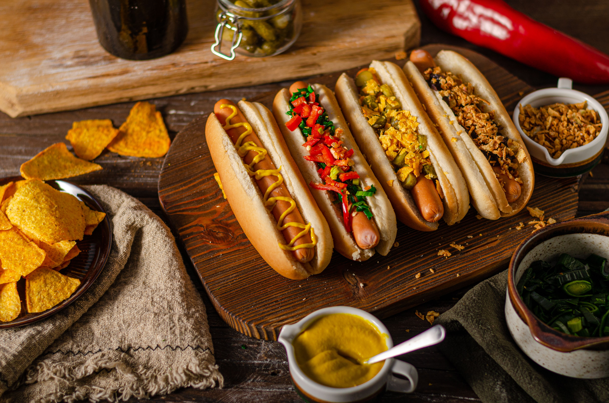
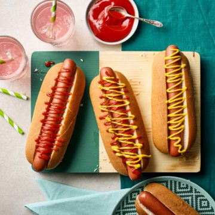
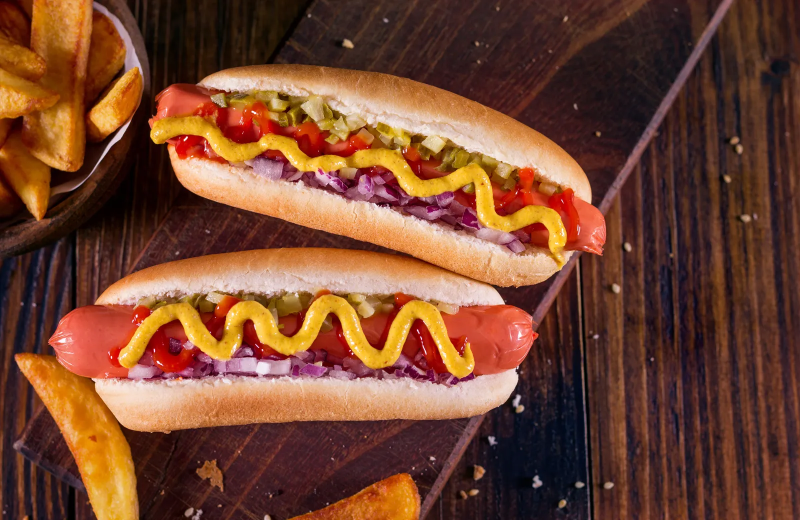
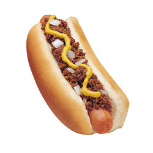
Hot Dog is a quintessential American street food, is deceptively simple yet allows for a vast array of variations. At its core, it consists of a cooked sausage, most commonly a frankfurter or wiener, served in a partially sliced bun. The sausage itself is typically made from cured pork, beef, or poultry, or a combination thereof, and is seasoned with a blend of spices.
The bun, usually a soft, slightly sweet roll, serves as the vessel for the sausage and toppings. Its texture and ability to hold up to the fillings are crucial. Beyond these basics, the hot dog becomes a blank canvas for culinary creativity.
Regional variations abound. In New York City, a classic hot dog might be topped with mustard and sauerkraut, while in Chicago, it's a carefully constructed affair with yellow mustard, dark green relish, chopped onions, tomato wedges, a pickle spear, sport peppers, and celery salt.
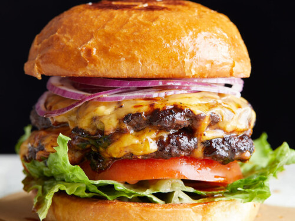
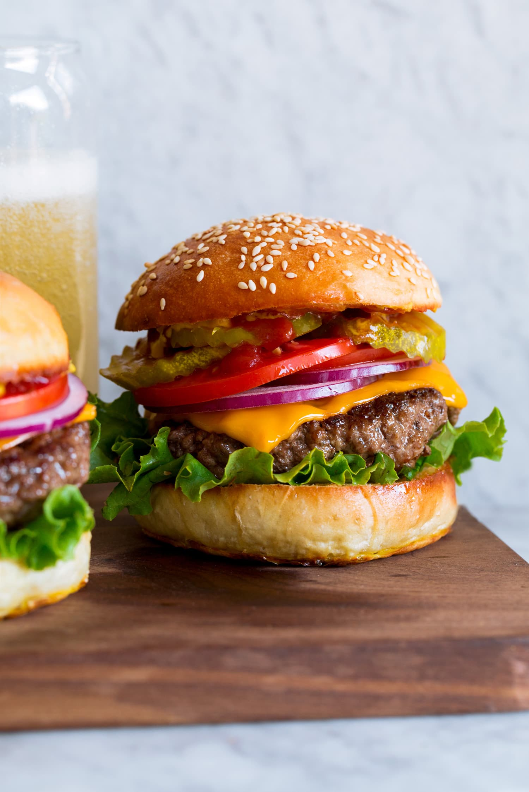
Hamburger is a cornerstone of American cuisine, is a simple yet endlessly adaptable dish. At its heart lies a ground meat patty, most commonly beef, but also chicken, turkey, or vegetarian alternatives, cooked and nestled within a sliced bun. The quality of the ground meat is paramount, with a balance of lean and fat contributing to both flavor and juiciness.
The bun, typically a soft, slightly sweet roll, serves as the foundation, providing a textural contrast to the patty and holding the various toppings. Its ability to absorb juices without disintegrating is crucial. Beyond the basic patty and bun, the hamburger becomes a canvas for culinary creativity.
Cooking methods significantly impact the final product. Grilling imparts a smoky char and crispy exterior, while pan-frying yields a caramelized crust. Baking and broiling offer alternative cooking techniques.
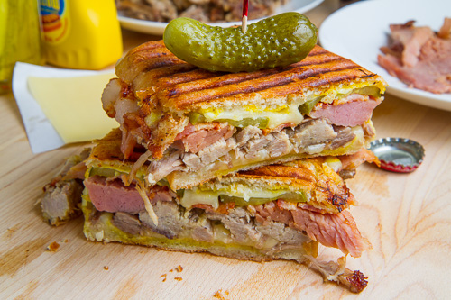
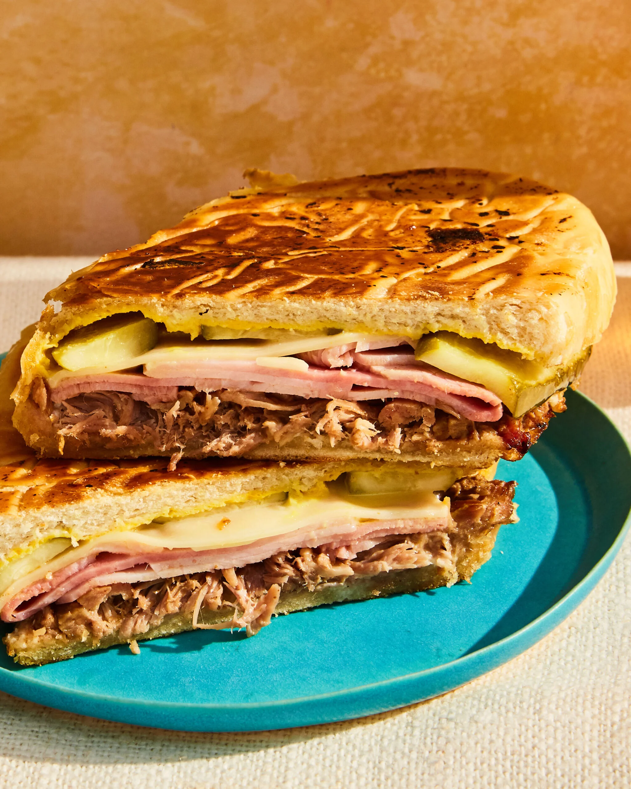
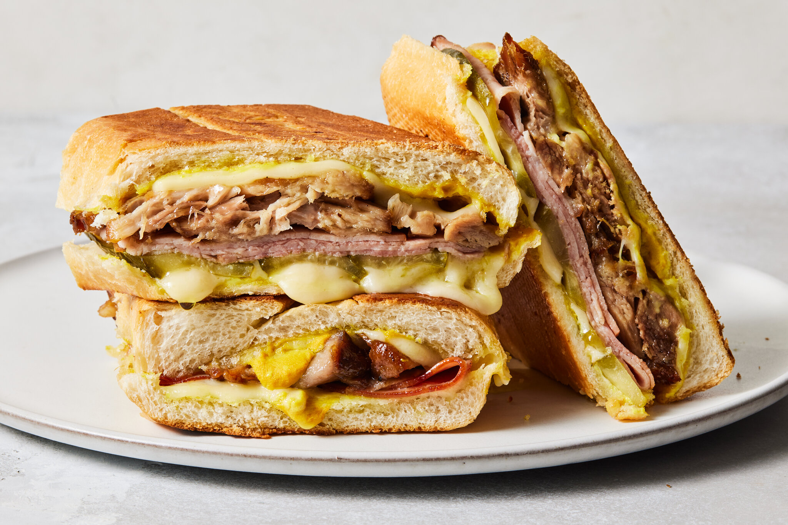
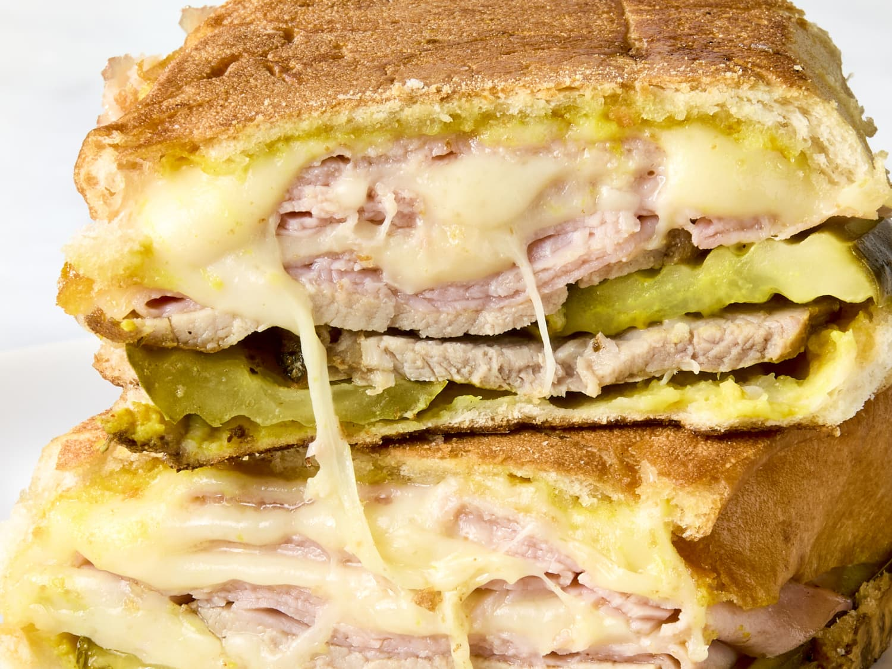
The Cuban sandwich, or "Cubano", is a pressed and toasted sandwich that offers a delightful blend of flavors and textures. It's a culinary icon, especially popular in Miami, Tampa, and regions with significant Cuban populations. Central to its character is Cuban bread, a long, slightly sweet loaf with a softer, flakier crust achieved through the use of lard or vegetable shortening. Roasted pork, known as lechón asado, takes center stage, marinated in a citrus-based mojo sauce and slow-roasted for tenderness and tangy savoriness. Thinly sliced, high-quality ham and melted Swiss cheese contribute salty and nutty-sweet notes, respectively. Dill pickles provide a crucial acidic crunch that balances the richness of the meats and cheese. Yellow mustard adds a sharp, tangy bite, completing the flavor profile.

 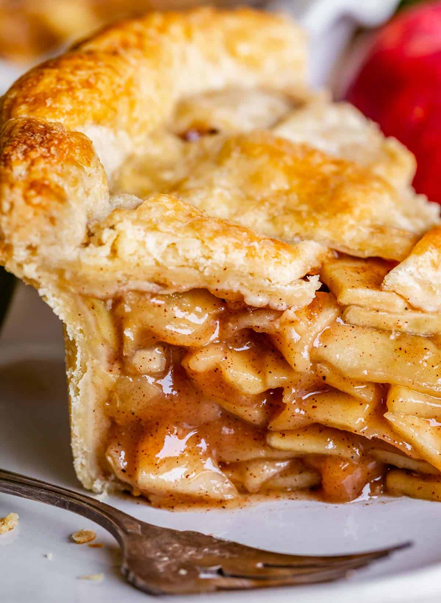
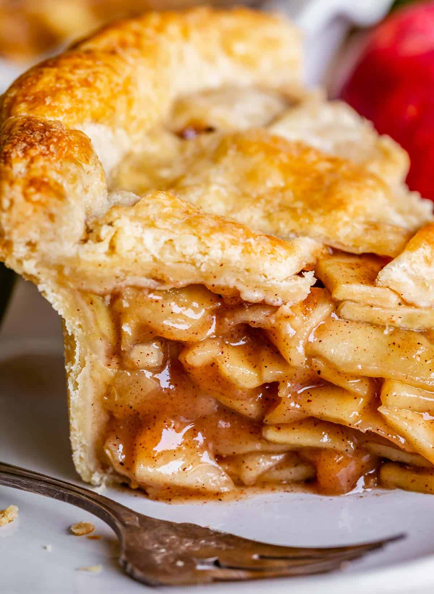
 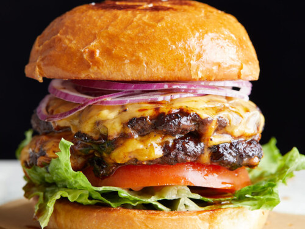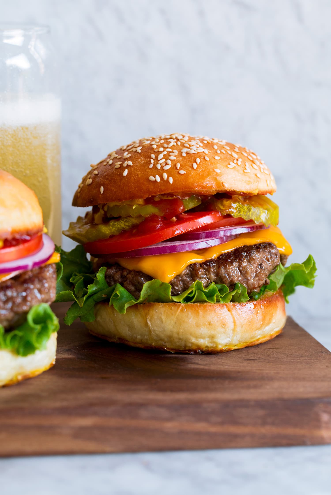
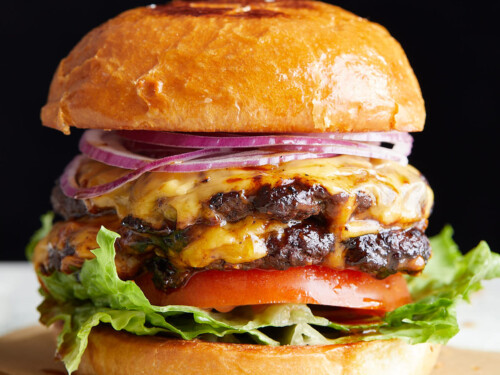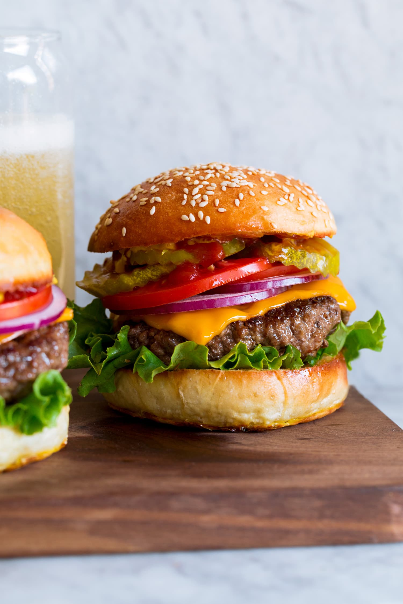